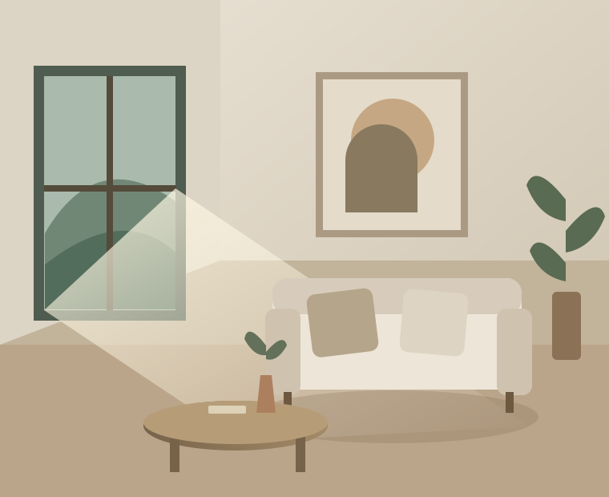

Morada natural
CONCEITO 01 · RESIDENCIAL
ARQUITETURA PARA SENTIR
Design que acolhe. Detalhes que permanecem. Um conceito de arquitetura que encontra beleza no essencial.
Conheça os espaços ↗Identidade e projetos ilustrativos para demonstrar um site de arquitetura.

UM OLHAR SOBRE O HABITAR
Três direções conceituais para um portfólio de arquitetura.
CONCEITO 01 · RESIDENCIAL
CONCEITO 02 · INTERIORES
CONCEITO 03 · RESIDENCIAL
A ESSÊNCIA DO CONCEITO
Materiais naturais, luz e proporção. Este conceito explora uma apresentação delicada, em que os espaços e os detalhes contam a história.
Um site assim pode apresentar o estúdio, organizar os projetos e facilitar o primeiro contato de novos clientes.
A Orvysion pode criar uma presença digital com a sua identidade.